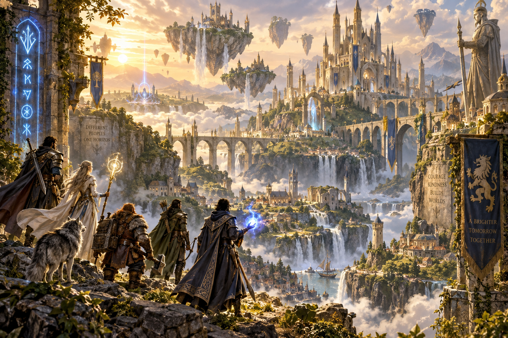

1位

メタファー：リファンタジオ（Nintendo Switch 2 Edition）
アトラスが贈る本格ファンタジーRPGがNintendo Switch 2に満を持して登場。40種類以上のジョブを軸とした「アーキタイプ」システムが特徴で、リアルタイムフィールドアクションとターン制コマンドバトルを融合した戦略性の高い戦闘が楽しめる。重厚なストーリーと美麗なグラフィックでRPGファン必携の一作。2026年11月12日発売。
おすすめ理由：Switch 2の性能を活かしたビジュアル強化と快適な操作感で、シリーズ未経験者にも今が入門の絶好機！